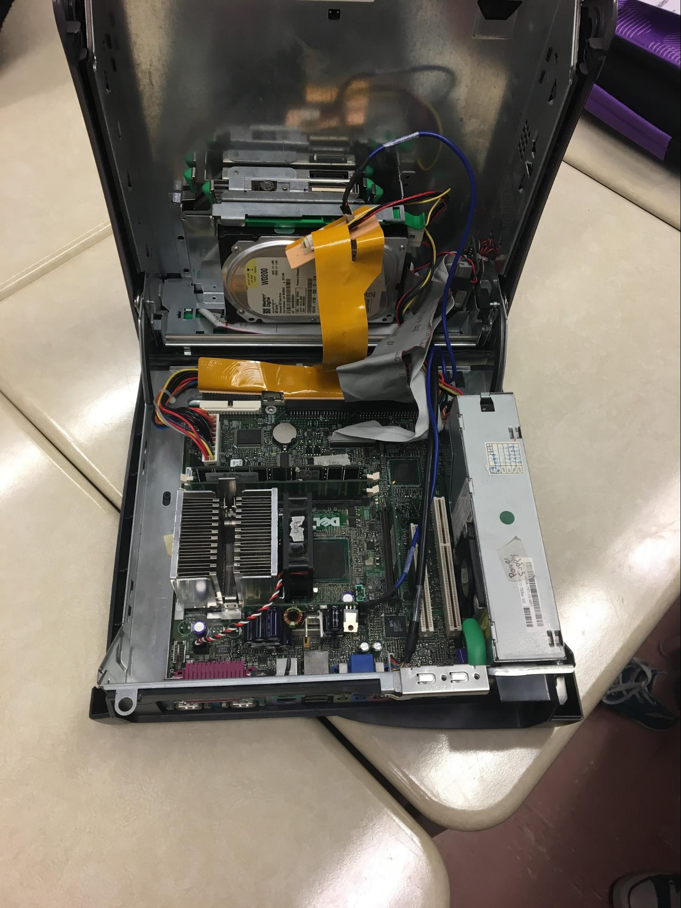
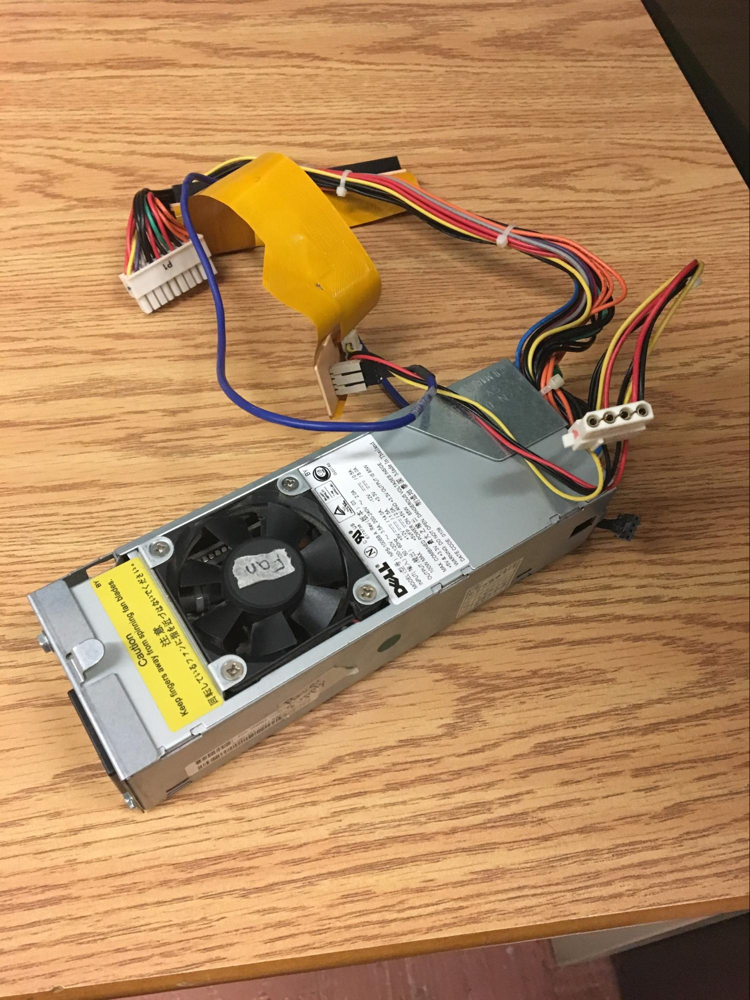
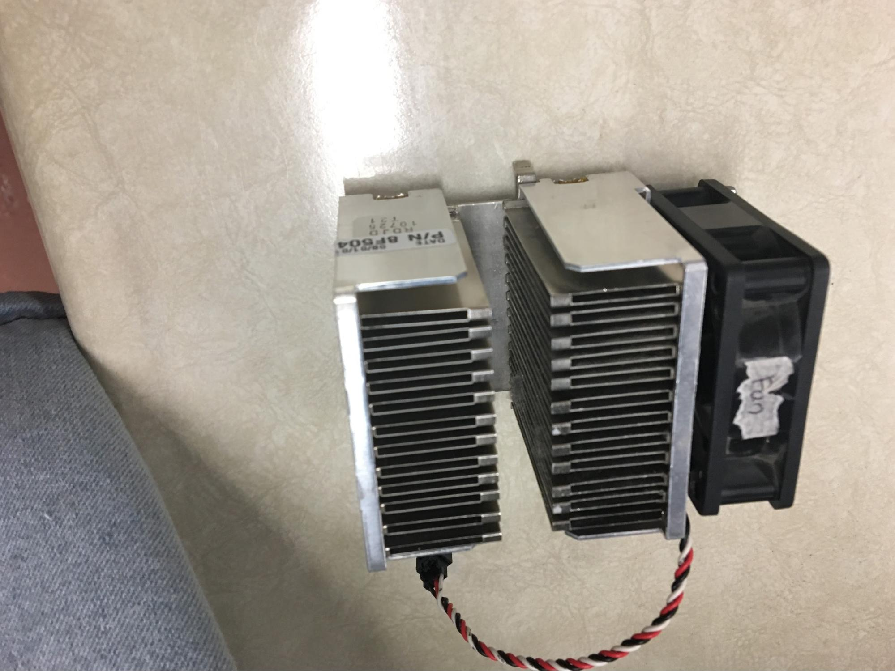
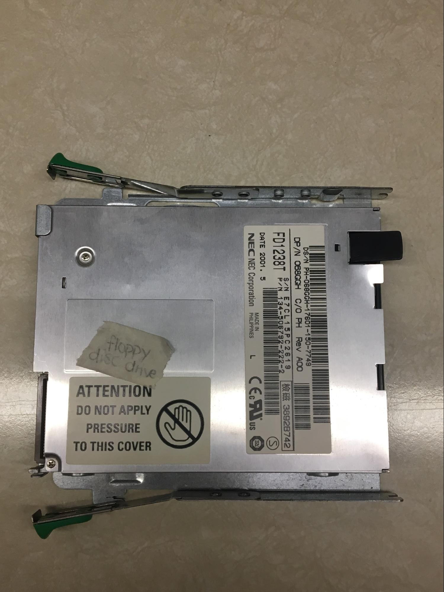

Cindia, Catherine, James, and Frank’s Intermediate Computer Science Website
Introduction
Welcome to our website. If you’ve stumbled upon this in the year 2117 where you desperately need to find the manual on how to fix
a dell computer for God knows what reason, the dell support website will work well. Bye!
Otherwise, welcome to this website! On here you will find our week-long adventures in taking apart and then reassembling a dell computer,
then proceeding to write a paper on it. Paper is availible below, full paper availible for purchase on Amazon.
How a computer works

First, when the user turns on the computer, the system software tells the CPU to start up and turn on certain programs and hardware
components. Then the computer is ready for more input by the user. This process is called booting up.
The next thing that happens is when the user clicks on a program. The CPU gets the input to run the program and
outputs the program onto the monitor. If the user decides to play a video the CPU will get the input, tell the
sound and video cards to output a certain sound/colour. The user then is able to listen and look at the video.
As the CPU performs the task, it needs to store and change some info from the RAM, BIOS and hard drive. As the
computer gets the input and give out the output it gets the power to run by the power supply. The fan makes sure
as it’s running nothing overheats which may damage the hardware components and affect the performance speed. To
make sure the info from the CPU gets to another place, for example the video card, the motherboard is used.
These components are required to perform tasks the user sets out to the computer to accomplish and to manage the
PC’s overall performance. Each component needs to be able to do the specific task or else the computer will never be able to perform the tasks it’s meant to perform.
All the Components

Power Supply
Sound Card
Video Card



Heat Sink and Fan
Databus
BIOS


Floppy Disk Drive
CD-ROM Drive
Hard Drive



Before and After

When we first started unboxing the PC, we found it very difficult because we didn’t know which components were
which. We were also afraid that we might accidentally break the components, but we took out the parts successfully
and didn’t break a single thing. It was an amazing experience to deal with the material we studied for in real
life. After we put it back together, we discovered that we took some other group’s RAM module. There were
challenges while putting it back together, such as putting back the CD-RAM Drive, but we managed to finish the
task successfully. It was a pleasant experience.